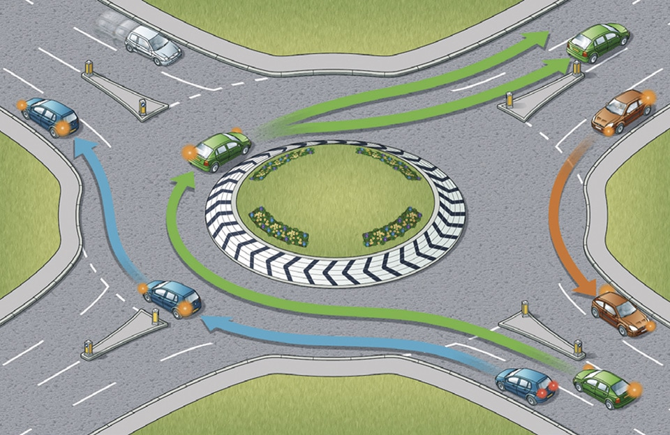
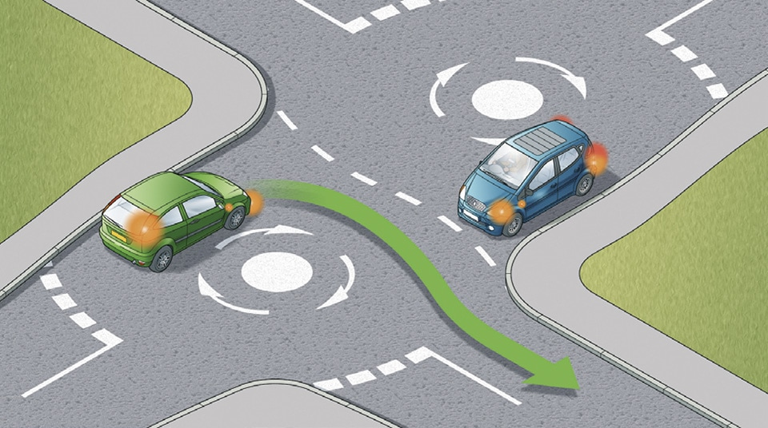

Using the road (159 to 203)
4. Roundabouts (184 to 190)
184
On approaching a roundabout take notice and act on all the information available to you, including traffic signs, traffic lights and lane markings which direct you into the correct lane. You should
185
When reaching the roundabout you should
On approaching a roundabout take notice and act on all the information available to you, including traffic signs, traffic lights and lane markings which direct you into the correct lane. You should
- use Mirrors – Signal – Manoeuvre at all stages
- decide as early as possible which exit you need to take
- give an appropriate signal (see Rule 186, below). Time your signals so as not to confuse other road users
- get into the correct lane
- adjust your speed and position to fit in with traffic conditions
- be aware of the speed and position of all the road users around you.
185
When reaching the roundabout you should
- give priority to traffic approaching from your right, unless directed otherwise by signs, road markings or traffic lights
- check whether road markings allow you to enter the roundabout without giving way. If so, proceed, but still look to the right before joining
- watch out for all other road users already on the roundabout; be aware they may not be signalling correctly or at all
- look forward before moving off to make sure traffic in front has moved off.

Rule 185: Follow the correct procedure at roundabouts
186
Signals and position. When taking the first exit to the left, unless signs or markings indicate otherwise
You should give priority to cyclists on the roundabout. They will be travelling more slowly than motorised traffic. Give them plenty of room and do not attempt to overtake them within their lane. Allow them to move across your path as they travel around the roundabout.
Cyclists, horse riders and horse drawn vehicles may stay in the left-hand lane when they intend to continue across or around the roundabout and should signal right to show you they are not leaving the roundabout. Drivers should take extra care when entering a roundabout to ensure that they do not cut across cyclists, horse riders or horse drawn vehicles in the left-hand lane, who are continuing around the roundabout.
187
In all cases watch out for and give plenty of room to
188
Mini-roundabouts. Approach these in the same way as normal roundabouts. All vehicles MUST pass round the central markings except large vehicles which are physically incapable of doing so. Remember, there is less space to manoeuvre and less time to signal. Avoid making U-turns at mini-roundabouts. Beware of others doing this.
Laws RTA 1988 sect 36 & TSRGD regs 10(1) & 16(1)
189
At double mini-roundabouts treat each roundabout separately and give way to traffic from the right.
190
Multiple roundabouts. At some complex junctions, there may be a series of mini-roundabouts at each intersection. Treat each mini-roundabout separately and follow the normal rules.
Signals and position. When taking the first exit to the left, unless signs or markings indicate otherwise
- signal left and approach in the left-hand lane
- keep to the left on the roundabout and continue signalling left to leave.
- signal right and approach in the right-hand lane
- keep to the right on the roundabout until you need to change lanes to exit the roundabout
- signal left after you have passed the exit before the one you want.
- select the appropriate lane on approach to the roundabout
- you should not normally need to signal on approach
- stay in this lane until you need to alter course to exit the roundabout
- signal left after you have passed the exit before the one you want.
You should give priority to cyclists on the roundabout. They will be travelling more slowly than motorised traffic. Give them plenty of room and do not attempt to overtake them within their lane. Allow them to move across your path as they travel around the roundabout.
Cyclists, horse riders and horse drawn vehicles may stay in the left-hand lane when they intend to continue across or around the roundabout and should signal right to show you they are not leaving the roundabout. Drivers should take extra care when entering a roundabout to ensure that they do not cut across cyclists, horse riders or horse drawn vehicles in the left-hand lane, who are continuing around the roundabout.
187
In all cases watch out for and give plenty of room to
- pedestrians who may be crossing the approach and exit roads
- traffic crossing in front of you on the roundabout, especially vehicles intending to leave by the next exit
- traffic which may be straddling lanes or positioned incorrectly
- motorcyclists
- long vehicles (including those towing trailers). These might have to take a different course or straddle lanes either approaching or on the roundabout because of their length. Watch out for their signals.
188
Mini-roundabouts. Approach these in the same way as normal roundabouts. All vehicles MUST pass round the central markings except large vehicles which are physically incapable of doing so. Remember, there is less space to manoeuvre and less time to signal. Avoid making U-turns at mini-roundabouts. Beware of others doing this.
Laws RTA 1988 sect 36 & TSRGD regs 10(1) & 16(1)
189
At double mini-roundabouts treat each roundabout separately and give way to traffic from the right.
190
Multiple roundabouts. At some complex junctions, there may be a series of mini-roundabouts at each intersection. Treat each mini-roundabout separately and follow the normal rules.

Rule 190: Treat each roundabout separately